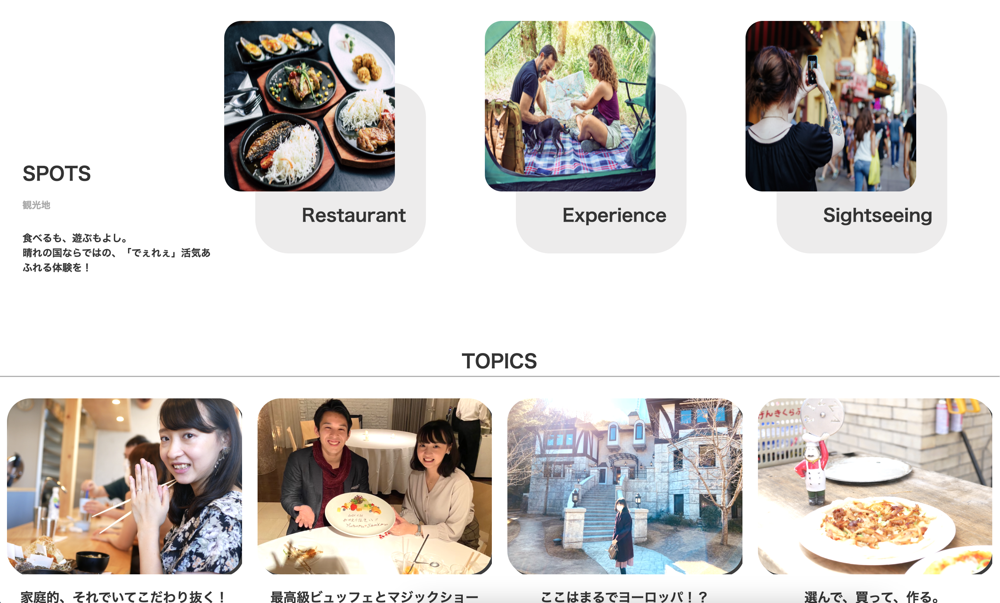
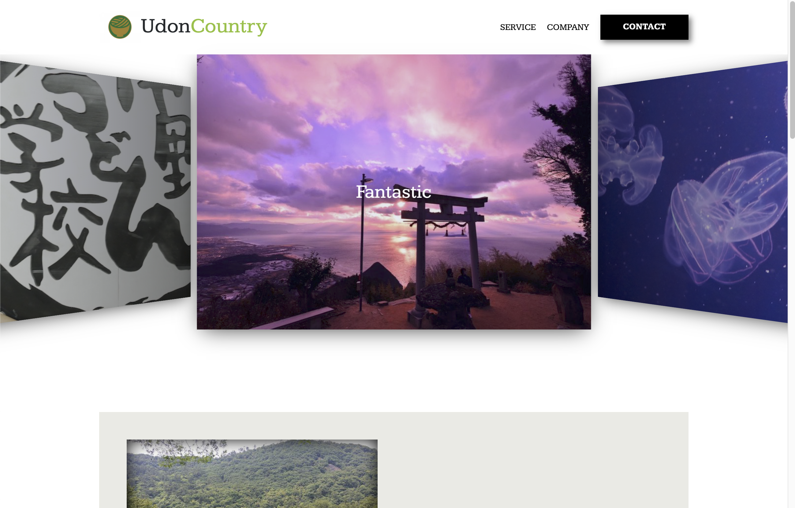
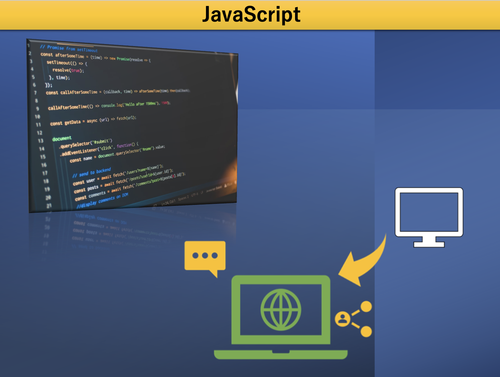
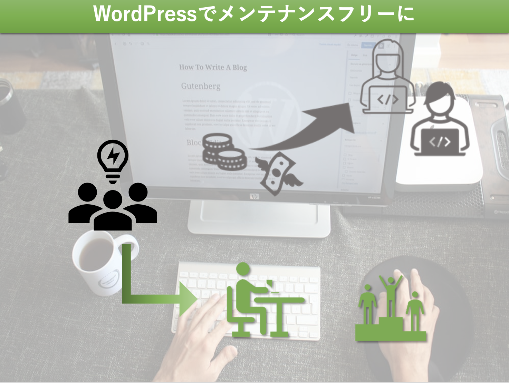

Works ポートフォリオ集
プログラミング学習の初期〜現在に至るまでの作品集
出来が悪かったり、ミスがあったり、機能が不足していたり・・・
そんな初期の作品から、現在に至るまでの全プロセスを公開しています。

Enjoy Okayama
地元の岡山のおすすめスポットを紹介するイメージで作成。「ワクワク感を持ってほしい」めんどくさがらずに「サクサククリックして情報にアクセスしてほしい」との思いから、マウスの動きに合わせて画像がダイナミックに動くホバーアニメーションを使用。用途に合わせて、『配置』 『色』 『形』そして『体験・アクション』を配置するよう工夫しました。とはいえ、 初めての作品。ページ上部のヘッダー画像がうまく反映できなかったり、文字サイズにも問題が・・・ ホバーアニメーションが初めて自作できた時は感無量でした。この段階ではレスポンシブ対応の技術がなかったため、PC閲覧専用。
Get More

Enjoy Okayama
地元の岡山のおすすめスポットを紹介するイメージで作成。「ワクワク感を持ってほしい」めんどくさがらずに「サクサククリックして情報にアクセスしてほしい」との思いから、マウスの動きに合わせて画像がダイナミックに動くホバーアニメーションを使用。用途に合わせて、『配置』 『色』 『形』そして『体験・アクション』を配置するよう工夫しました。とはいえ、 初めての作品。ページ上部のヘッダー画像がうまく反映できなかったり、文字サイズにも問題が・・・ ホバーアニメーションが初めて自作できた時は感無量でした。この段階ではレスポンシブ対応の技術がなかったため、PC閲覧専用。
Get MoreSkills & Tools 技術・ツール
案件に応じて、以下のスキルと経験から最適なものをピックアップし、目指すサービスを実現します。そのため、入念なヒアリングをご覚悟ください。目指す形を『くっきりと』描いた上で、作成いたします。
-
- HTML CSS『情報の流れ』と『ワクワク感』が肝
コーディングの際は、独りよがりでデザインを決めることはありません。ヒアリングをしながら、「誰が」「誰に」「何を」伝え、「どんな行動を起こしてほしいか」を明確に定めて、『情報の流れ』と『ゲームのように先に進みたくなるワクワク感』を組み込んだデザインを実現します。社内デジタルコンサルとして培った「ヒアリング力」と「相手の野望の実現力」に自負あり。
-
- JavaScript UX（ユーザー体験）をもっと。
JavaScriptとは、、「クリック」「マウス移動」というアクションによってWEBページの情報を『変化』させる技術。ボタンを押すことで『飛び出す』 『消える』 『クリックしたくなる』そんなあそび要素を取り入れ、UX・クリックレートを向上します。 -
- Google App Script Googleサービスとの連動
-
- PHP / WordPress自分自身でメンテ・変更ができる「早い」WEBサイトに
PHPを用いて世の中のWebサイトの40%が利用していると言われるWordPressへの組み込みを行います。WEBサイトの更新のたびに、エンジニアを雇のが億劫になる時もあるでしょう。WordPressであれば、コーディングの知識がなくても、SNSへの投稿感覚で自身で編集ができるようになります。個人や社内の人員だけでメンテができると利便性と情報感度が違います。
Profile 経歴
略歴
| 1993年 | 岡山県岡山市に生まれる |
| 小 ~ 中学校 | 小学校よりテレビゲームに没頭。 当時の夢はゲームクリエイター 当時からテクノロジーやコンピュータに関心を持つ |
| 高校時代 | 海外ゲームをプレイするため、英語学習に没頭。 気づけば夢は英語教員に |
| 大学・大学院 | 英語、教育、哲学を学ぶ。学習や論文執筆に最新機器を取り入れ、Webツールへの関心が開く |
| 教員時代 | 文化祭責任者を拝命。プログラミングやアプリツールを用いた業務の自動化・オンライン化を推進。 |
| 転換期 | 効率化のアイデアを考える最中、Excelやプログラミングを使った業務の自動化に目覚める。 培った英語力を生かしながら国内外の知見を取り入れてプログラミングを学習。 |
| 現在 |
某自動車メーカーのデジタル・コンサルティング職として勤務。 業務の自動化や営業ツールなどのデジタルツールの作成・プログラミングを行う傍ら、培ったノウハウをWebサイトやアプリ制作などでシェア。 |
所有資格
- 高等学校専修免許状（英語）
- TOEIC 公開テスト 965点
- TOEFL iBT 99点
- FP３級
趣味
- 業務ツール・アプリ研究
- デザイン学習
- Kindle Unlimited
- テニス
- 洋画鑑賞(最近はMARVEL)
Contact お仕事のご依頼
- TEL
- 080-1914-5919
- 411.mutsuo@gmail.com